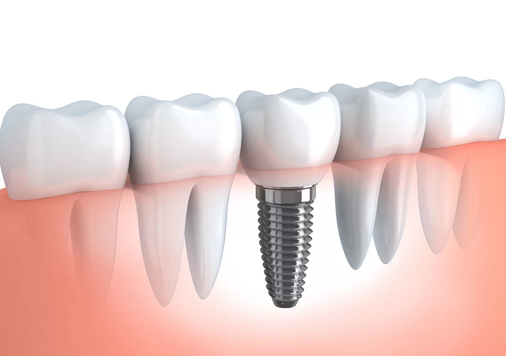
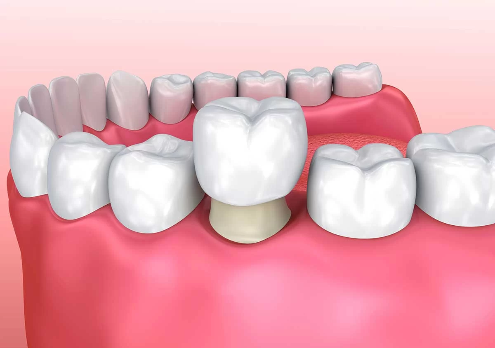
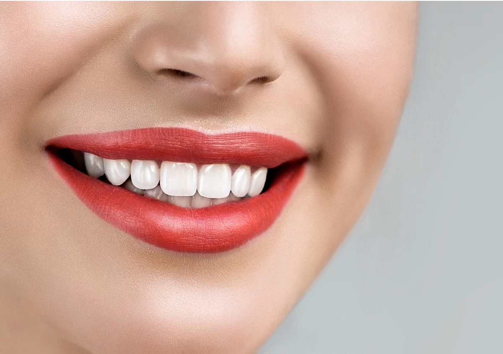
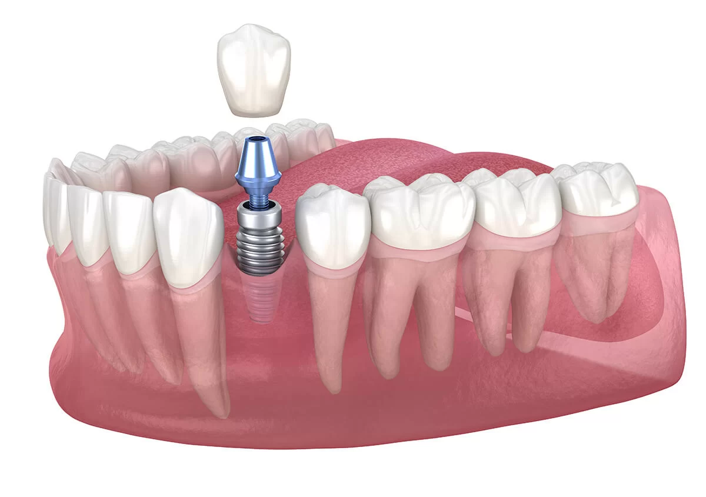

Efficient crown care
For selected cases, CEREC software and on-site equipment support same-day crown care. Your dentist will explain whether that path fits your needs.
How same-day crowns workWalden Dental · Austin, Texas
Walden Dental provides comprehensive dental care for adults and kids in Austin, near Cedar Park.
Custom, cost-effective, and convenient care, shaped around your needs, preferences, and goals.
Start by booking online or calling our Austin office so the team can help you choose the right visit.
A practical home for your dental care
Walden Dental provides complete dental care for children, adults, and seniors at one North Austin office. Our team takes time to understand your needs, preferences, and goals before recommending a path forward.
We combine preventive, restorative, implant, and cosmetic options with modern technology and straightforward next steps. If you are planning around a budget, review our financing information, including CareCredit, and our insurance information before your visit.
Explore your options
Start with the reason you are here. Each path leads to more detail about the care available at our Austin office.

02Dental ImplantsLearn about an implant-based path for replacing missing teeth.Explore dental implants 03Dental VeneersSee how veneers may be used within a personalized cosmetic plan.View dental veneers
03Dental VeneersSee how veneers may be used within a personalized cosmetic plan.View dental veneers

04Same-Day CrownsRead about selected crown care supported by on-site CEREC technology.Explore same-day crowns
05Teeth WhiteningExplore professional options, including Zoom in-office whitening.View teeth whitening
06Smile MakeoverBring several aesthetic concerns into one coordinated conversation.Explore smile makeoversYour dentist
Owner and Founder of Walden Dental
Dr. Frank moved with his family to Central Texas to open Walden Dental after becoming fond of the region during his service in the Air Force. Today, he leads the Austin practice with a personal, practical approach to care.
His first-party biography documents his dental education at Tufts University School of Dental Medicine and undergraduate study at the United States Air Force Academy.
Read Dr. Frank's storyPeople first
Dental care is personal. The Walden Dental team works to understand what matters to you, explain options clearly, and keep each next step easy to follow.
Meet the Walden Dental teamThe Walden Dental way
Your time matters. We use selected technology and a broad care scope to make the visit easier to understand and plan.
For selected cases, CEREC software and on-site equipment support same-day crown care. Your dentist will explain whether that path fits your needs.
How same-day crowns workProfessional cosmetic services include Zoom in-office whitening, veneers, and coordinated smile-makeover planning.
Explore our technologyPatient gallery
Browse imagery from Walden Dental's current patient and smile gallery. Every treatment plan and outcome is individual, so the complete gallery is a starting point for a conversation, not a prediction.
View the Smile GalleryPatient experience
Every review reflects an individual experience. Read patient stories shared by the practice.
Read Patient StoriesFrom the dental blog
Explore practical information from the practice about caring for your smile and understanding common treatment options.
View all articlesFive practical habits to help care for dental implants over time.
Read articleHow one-visit CEREC technology can simplify selected crown appointments.
Read articleWhy porcelain veneers may be considered for stains, chips, and other visible concerns.
Read articlePlan your visit
Review practical information now, or call and let our team point you in the right direction.
Your Austin dental office
Visit Walden Dental at 9800 N Lake Creek Pkwy #150 on Floor 1 in Shops at Walden Park in Austin. The GBP listing shows a wheelchair-accessible entrance.
9800 N Lake Creek Pkwy #150The Austin office also welcomes patients from nearby Cedar Park, Round Rock, and Brushy Creek.
Ready when you are
Book online, call (512) 337-8560, or get directions to our Austin office.